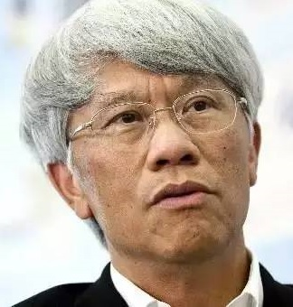

核心团队
-
Mr. Kelvin Zhao
核心合伙人兼首席投资官
英国CASS商学院硕士，拥有20多年大宗商品期货投资交易和风险管理经验。曾先后任职瑞士雀巢全球商品期货对冲团队高级交易员，纽约证券交易所伦敦期货交易高级风控官，全球最大独立经纪商RJO大宗商品部副总裁， 帮助RJO建立了英国伦敦第一个服务大型机构业务的大宗商品部门。
-
Dr. Aaron Xue
核心合伙人兼人工智能科学家
人工智能学博士后，行业顶尖专家学者。毕业于英国帝国理工学院、中国科学院。从事机器语音等人工智能技术研究开发近十年，先后担任中科院助理研究员、帝国理工学院玛丽居里学者、某互联网公司顾问科学家。多次在欧洲多国从事访问研究。在国际顶级会议和期刊发表学术论文20余篇。
-
Dr. Cameron Ying
核心合伙人兼风控官
布里斯托大学宏观经济学博士， 复旦大学理论经济学博士后。供职于顶级中资金融机构从事全球资本市场策略、量化风险管理研究。曾任布里斯托大学经济系研究员、研究助理。在宏观经济、金融市场、资产配置、风险管理等领域有丰富研究经验，在国际学术期刊、国内外媒体专栏长期发表观点。
-
Dr. Andrew Cheung
合伙人兼投行经济学家
国际经济与商务学博士，先后就读于英国牛津大学赫特福德学院，英国布里斯托大学经管学院。国际商务学术委员会委员。曾供职于多家伦敦及香港大型投资银行。长期致力于全球宏观与资本投资策略研究，并在国际经济管理学术期刊发表数十篇文章。
-
Miss.Mengfan Quan
合作人兼交易员
来自厦门大学经济学院，投资银行高级项目经理，上市公司战略投资部高级投资经理。曾参与多起境内外政府债券、公司债券和企业债券的发行项目，参与过大型央企的债券发行以及资产证券化发行项目。现任职于上市公司战略投资部门，从事投资交易工作，重点关注人工 智能、大数据、区块链及通信产业。具备长期的衍生品尤其是大宗商品的交易经验。
-
Dr.TsingsDemetris
首席合规官
英国华威大学管理学博士，CFA（特许注册金融分析师），ACCA（国际注册会计师），美国沃顿商学院MBA。从事投行合规业务近20年，欧美金融机构合规咨询专家。曾在伦敦金融城顶级投行担任首席合规官。
顾问
-
Prof. Jonathan Beaverstock
英国皇家社会科学院院士，英国皇家文艺学院院士，布里斯托尔大学前经济管理学院院长, Jonathan 教授作为欧洲地缘政治经济及国际商务领域专家。多年致力于金融机构国际化，城市经济，以及全球地缘政治经济方向的研究。作为欧洲知名的地理经济学家，其政策建议曾多次被英国财政部（HM Treasury）及阿联酋阿布扎比投资局(ADIC)采纳。
-

Dr. Kai Yang
毕业于北京大学和牛津大学。曾在瑞士联合银行（UBS）英国工作数十年， 先后担任花旗集团（亚洲），摩根斯坦利（亚洲）董事总经理。作为投行权威人士，杨凯博士在投资银行业务（上市及并购），二级市场交易，以及风控合规方面拥有丰富的专业知识及经验。
-
Prof. Xiaohui Wu
清华大学博士。曾担任多家新创企业的总经理，并在此期间为企业成功地引进战略投资者，有丰富的创业和管理实践经验。2009年在厦门大学管理学院任教，墨尔本大学金融系高级访问学者。主要研究方向是金融工程，公司治理、创业与创新、财务管理。承担和参与多项国家和省部级课题。